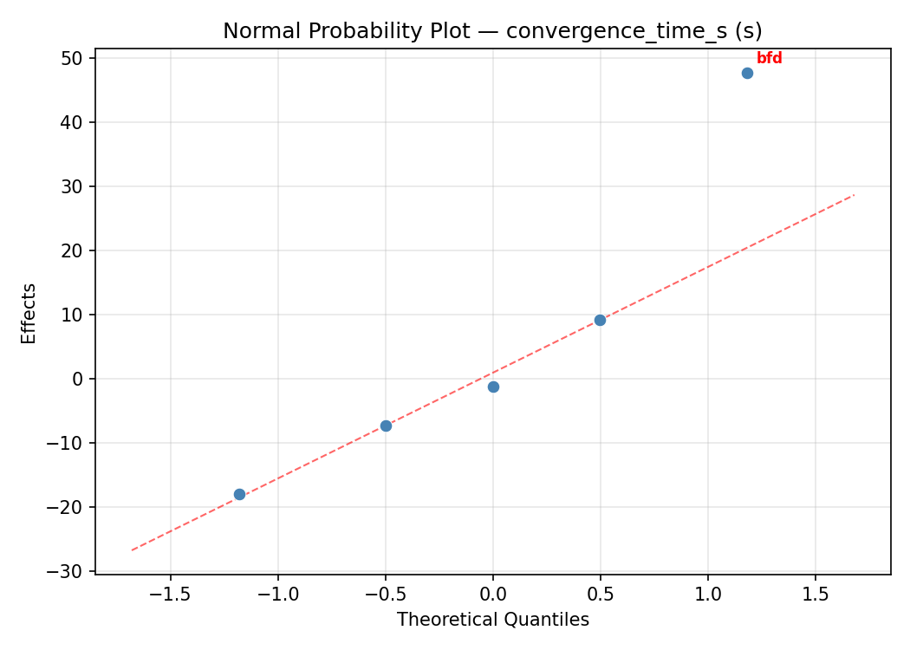
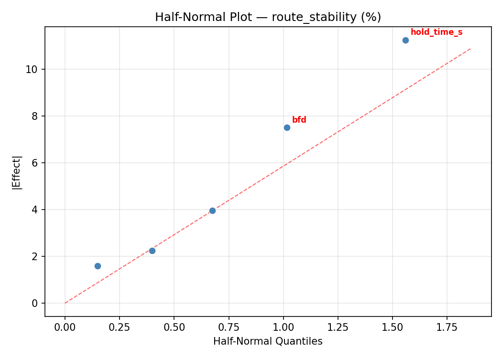
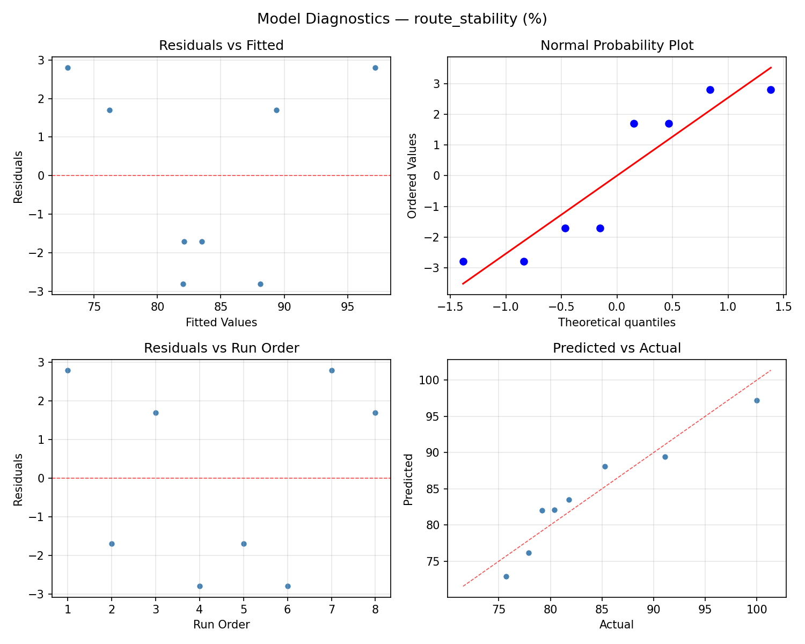

Summary
This experiment investigates bgp route convergence. Fractional factorial of 5 BGP timer and dampening parameters for convergence speed.
The design varies 5 factors: keepalive s (s), ranging from 10 to 60, hold time s (s), ranging from 30 to 180, mrai s (s), ranging from 5 to 30, dampening, ranging from off to on, and bfd, ranging from off to on. The goal is to optimize 2 responses: convergence time s (s) (minimize) and route stability (%) (maximize). Fixed conditions held constant across all runs include as count = 50, topology = partial_mesh.
A fractional factorial design reduces the number of runs from 32 to 8 by deliberately confounding higher-order interactions. This is ideal for screening — identifying which of the 5 factors matter most before investing in a full study.
Key Findings
For convergence time s, the most influential factors were keepalive s (50.1%), dampening (23.7%), mrai s (18.6%). The best observed value was -0.3 (at keepalive s = 60, hold time s = 180, mrai s = 5).
For route stability, the most influential factors were bfd (32.5%), dampening (24.5%), hold time s (15.9%). The best observed value was 100.0 (at keepalive s = 60, hold time s = 180, mrai s = 5).
Recommended Next Steps
- Follow up with a response surface design (CCD or Box-Behnken) on the top 3–4 factors to model curvature and find the true optimum.
- Consider whether any fixed factors should be varied in a future study.
- The screening results can guide factor reduction — drop factors contributing less than 5% and re-run with a smaller, more focused design.
Experimental Setup
Factors
| Factor | Low | High | Unit |
|---|
keepalive_s | 10 | 60 | s |
hold_time_s | 30 | 180 | s |
mrai_s | 5 | 30 | s |
dampening | off | on | |
bfd | off | on | |
Fixed: as_count = 50, topology = partial_mesh
Responses
| Response | Direction | Unit |
|---|
convergence_time_s | ↓ minimize | s |
route_stability | ↑ maximize | % |
Configuration
{
"metadata": {
"name": "BGP Route Convergence",
"description": "Fractional factorial of 5 BGP timer and dampening parameters for convergence speed"
},
"factors": [
{
"name": "keepalive_s",
"levels": [
"10",
"60"
],
"type": "continuous",
"unit": "s"
},
{
"name": "hold_time_s",
"levels": [
"30",
"180"
],
"type": "continuous",
"unit": "s"
},
{
"name": "mrai_s",
"levels": [
"5",
"30"
],
"type": "continuous",
"unit": "s"
},
{
"name": "dampening",
"levels": [
"off",
"on"
],
"type": "categorical",
"unit": ""
},
{
"name": "bfd",
"levels": [
"off",
"on"
],
"type": "categorical",
"unit": ""
}
],
"fixed_factors": {
"as_count": "50",
"topology": "partial_mesh"
},
"responses": [
{
"name": "convergence_time_s",
"optimize": "minimize",
"unit": "s"
},
{
"name": "route_stability",
"optimize": "maximize",
"unit": "%"
}
],
"settings": {
"operation": "fractional_factorial",
"test_script": "use_cases/51_bgp_route_convergence/sim.sh"
}
}
Experimental Matrix
The Fractional Factorial Design produces 8 runs. Each row is one experiment with specific factor settings.
| Run | keepalive_s | hold_time_s | mrai_s | dampening | bfd |
|---|
| 1 | 10 | 180 | 30 | off | off |
| 2 | 60 | 30 | 5 | off | off |
| 3 | 60 | 180 | 5 | on | off |
| 4 | 60 | 180 | 30 | on | on |
| 5 | 10 | 180 | 5 | off | on |
| 6 | 60 | 30 | 30 | off | on |
| 7 | 10 | 30 | 5 | on | on |
| 8 | 10 | 30 | 30 | on | off |
Step-by-Step Workflow
1
Preview the design
$ python doe.py info --config use_cases/51_bgp_route_convergence/config.json
2
Generate the runner script
$ python doe.py generate --config use_cases/51_bgp_route_convergence/config.json \
--output use_cases/51_bgp_route_convergence/results/run.sh --seed 42
3
Execute the experiments
$ bash use_cases/51_bgp_route_convergence/results/run.sh
4
Analyze results
$ python doe.py analyze --config use_cases/51_bgp_route_convergence/config.json
5
Get optimization recommendations
$ python doe.py optimize --config use_cases/51_bgp_route_convergence/config.json
6
Multi-objective optimization
With 2 competing responses, use --multi to find the best compromise via Derringer–Suich desirability.
$ python doe.py optimize --config use_cases/51_bgp_route_convergence/config.json --multi
7
Generate the HTML report
$ python doe.py report --config use_cases/51_bgp_route_convergence/config.json \
--output use_cases/51_bgp_route_convergence/results/report.html
Features Exercised
| Feature | Value |
|---|
| Design type | fractional_factorial |
| Factor types | continuous (3), categorical (2) |
| Arg style | double-dash |
| Responses | 2 (convergence_time_s ↓, route_stability ↑) |
| Total runs | 8 |
Analysis Results
Generated from actual experiment runs using the DOE Helper Tool.
Response: convergence_time_s
Top factors: keepalive_s (50.1%), dampening (23.7%), mrai_s (18.6%).
ANOVA
| Source | DF | SS | MS | F | p-value |
|---|
| Source | DF | SS | MS | F | p-value |
| keepalive_s | 1 | 4767.7613 | 4767.7613 | 8.365 | 0.0341 |
| hold_time_s | 1 | 2.3112 | 2.3112 | 0.004 | 0.9517 |
| mrai_s | 1 | 657.0312 | 657.0312 | 1.153 | 0.3320 |
| dampening | 1 | 1069.5313 | 1069.5313 | 1.877 | 0.2290 |
| bfd | 1 | 78.7512 | 78.7512 | 0.138 | 0.7253 |
| keepalive_s*hold_time_s | 1 | 1069.5313 | 1069.5313 | 1.877 | 0.2290 |
| keepalive_s*mrai_s | 1 | 78.7512 | 78.7512 | 0.138 | 0.7253 |
| keepalive_s*dampening | 1 | 2.3112 | 2.3112 | 0.004 | 0.9517 |
| keepalive_s*bfd | 1 | 657.0312 | 657.0312 | 1.153 | 0.3320 |
| hold_time_s*mrai_s | 1 | 166.5313 | 166.5313 | 0.292 | 0.6120 |
| hold_time_s*dampening | 1 | 4767.7613 | 4767.7613 | 8.365 | 0.0341 |
| hold_time_s*bfd | 1 | 593.4013 | 593.4013 | 1.041 | 0.3544 |
| mrai_s*dampening | 1 | 593.4012 | 593.4012 | 1.041 | 0.3544 |
| mrai_s*bfd | 1 | 4767.7613 | 4767.7613 | 8.365 | 0.0341 |
| dampening*bfd | 1 | 166.5312 | 166.5312 | 0.292 | 0.6120 |
| Error | (Lenth | PSE) | 5 | 2849.7469 | 569.9494 |
| Total | 7 | 7335.3188 | 1047.9027 | | |
Pareto Chart

Main Effects Plot

Normal Probability Plot of Effects

Half-Normal Plot of Effects

Model Diagnostics

Response: route_stability
Top factors: bfd (32.5%), dampening (24.5%), hold_time_s (15.9%).
ANOVA
| Source | DF | SS | MS | F | p-value |
|---|
| Source | DF | SS | MS | F | p-value |
| keepalive_s | 1 | 16.2450 | 16.2450 | 0.667 | 0.4513 |
| hold_time_s | 1 | 22.4450 | 22.4450 | 0.921 | 0.3813 |
| mrai_s | 1 | 16.2450 | 16.2450 | 0.667 | 0.4513 |
| dampening | 1 | 53.0450 | 53.0450 | 2.177 | 0.2001 |
| bfd | 1 | 93.8450 | 93.8450 | 3.851 | 0.1070 |
| keepalive_s*hold_time_s | 1 | 53.0450 | 53.0450 | 2.177 | 0.2001 |
| keepalive_s*mrai_s | 1 | 93.8450 | 93.8450 | 3.851 | 0.1070 |
| keepalive_s*dampening | 1 | 22.4450 | 22.4450 | 0.921 | 0.3813 |
| keepalive_s*bfd | 1 | 16.2450 | 16.2450 | 0.667 | 0.4513 |
| hold_time_s*mrai_s | 1 | 253.1250 | 253.1250 | 10.388 | 0.0234 |
| hold_time_s*dampening | 1 | 16.2450 | 16.2450 | 0.667 | 0.4513 |
| hold_time_s*bfd | 1 | 0.0450 | 0.0450 | 0.002 | 0.9674 |
| mrai_s*dampening | 1 | 0.0450 | 0.0450 | 0.002 | 0.9674 |
| mrai_s*bfd | 1 | 16.2450 | 16.2450 | 0.667 | 0.4513 |
| dampening*bfd | 1 | 253.1250 | 253.1250 | 10.388 | 0.0234 |
| Error | (Lenth | PSE) | 5 | 121.8375 | 24.3675 |
| Total | 7 | 454.9950 | 64.9993 | | |
Pareto Chart

Main Effects Plot

Normal Probability Plot of Effects

Half-Normal Plot of Effects

Model Diagnostics

Response Surface Plots
3D surfaces fitted with quadratic RSM. Red dots are observed data points.
convergence time s hold time s vs mrai s

convergence time s keepalive s vs hold time s

convergence time s keepalive s vs mrai s

route stability hold time s vs mrai s

route stability keepalive s vs hold time s

route stability keepalive s vs mrai s

Multi-Objective Optimization
When responses compete, Derringer–Suich desirability finds the best compromise.
Each response is scaled to a 0–1 desirability, then combined via a weighted geometric mean.
Overall Desirability
D = 0.9545
Per-Response Desirability
| Response | Weight | Desirability | Predicted | Dir |
|---|
convergence_time_s |
1.0 |
|
-0.30 0.9545 -0.30 s |
↓ |
route_stability |
1.5 |
|
100.00 0.9545 100.00 % |
↑ |
Recommended Settings
| Factor | Value |
|---|
keepalive_s | 10 s |
hold_time_s | 180 s |
mrai_s | 5 s |
dampening | off |
bfd | on |
Source: from observed run #7
Trade-off Summary
Sacrifice = how much worse than single-objective best.
| Response | Predicted | Best Observed | Sacrifice |
|---|
route_stability | 100.00 | 100.00 | +0.00 |
Top 3 Runs by Desirability
| Run | D | Factor Settings |
|---|
| #8 | 0.5647 | keepalive_s=60, hold_time_s=30, mrai_s=30, dampening=off, bfd=on |
| #4 | 0.4009 | keepalive_s=10, hold_time_s=30, mrai_s=30, dampening=on, bfd=off |
Model Quality
| Response | R² | Type |
|---|
route_stability | 0.6094 | linear |
Full Multi-Objective Output
============================================================
MULTI-OBJECTIVE OPTIMIZATION
Method: Derringer-Suich Desirability Function
============================================================
Overall desirability: D = 0.9545
Response Weight Desirability Predicted Direction
---------------------------------------------------------------------
convergence_time_s 1.0 0.9545 -0.30 s ↓
route_stability 1.5 0.9545 100.00 % ↑
Recommended settings:
keepalive_s = 10 s
hold_time_s = 180 s
mrai_s = 5 s
dampening = off
bfd = on
(from observed run #7)
Trade-off summary:
convergence_time_s: -0.30 (best observed: -0.30, sacrifice: +0.00)
route_stability: 100.00 (best observed: 100.00, sacrifice: +0.00)
Model quality:
convergence_time_s: R² = 0.9379 (linear)
route_stability: R² = 0.6094 (linear)
Top 3 observed runs by overall desirability:
1. Run #7 (D=0.9545): keepalive_s=10, hold_time_s=180, mrai_s=5, dampening=off, bfd=on
2. Run #8 (D=0.5647): keepalive_s=60, hold_time_s=30, mrai_s=30, dampening=off, bfd=on
3. Run #4 (D=0.4009): keepalive_s=10, hold_time_s=30, mrai_s=30, dampening=on, bfd=off
Full Analysis Output
=== Main Effects: convergence_time_s ===
Factor Effect Std Error % Contribution
--------------------------------------------------------------
keepalive_s -48.8250 11.4450 50.1%
dampening -23.1250 11.4450 23.7%
mrai_s -18.1250 11.4450 18.6%
bfd 6.2750 11.4450 6.4%
hold_time_s 1.0750 11.4450 1.1%
=== ANOVA Table: convergence_time_s ===
Source DF SS MS F p-value
-----------------------------------------------------------------------------
keepalive_s 1 4767.7613 4767.7613 8.365 0.0341
hold_time_s 1 2.3112 2.3112 0.004 0.9517
mrai_s 1 657.0312 657.0312 1.153 0.3320
dampening 1 1069.5313 1069.5313 1.877 0.2290
bfd 1 78.7512 78.7512 0.138 0.7253
keepalive_s*hold_time_s 1 1069.5313 1069.5313 1.877 0.2290
keepalive_s*mrai_s 1 78.7512 78.7512 0.138 0.7253
keepalive_s*dampening 1 2.3112 2.3112 0.004 0.9517
keepalive_s*bfd 1 657.0312 657.0312 1.153 0.3320
hold_time_s*mrai_s 1 166.5313 166.5313 0.292 0.6120
hold_time_s*dampening 1 4767.7613 4767.7613 8.365 0.0341
hold_time_s*bfd 1 593.4013 593.4013 1.041 0.3544
mrai_s*dampening 1 593.4012 593.4012 1.041 0.3544
mrai_s*bfd 1 4767.7613 4767.7613 8.365 0.0341
dampening*bfd 1 166.5312 166.5312 0.292 0.6120
Error (Lenth PSE) 5 2849.7469 569.9494
Total 7 7335.3188 1047.9027
Note: Error estimated using Lenth's pseudo-standard-error (unreplicated design)
=== Interaction Effects: convergence_time_s ===
Factor A Factor B Interaction % Contribution
------------------------------------------------------------------------
hold_time_s dampening 48.8250 24.5%
mrai_s bfd 48.8250 24.5%
keepalive_s hold_time_s 23.1250 11.6%
keepalive_s bfd 18.1250 9.1%
hold_time_s bfd 17.2250 8.7%
mrai_s dampening 17.2250 8.7%
hold_time_s mrai_s 9.1250 4.6%
dampening bfd 9.1250 4.6%
keepalive_s mrai_s -6.2750 3.2%
keepalive_s dampening -1.0750 0.5%
=== Summary Statistics: convergence_time_s ===
keepalive_s:
Level N Mean Std Min Max
------------------------------------------------------------
10 4 68.7750 20.9837 50.5000 98.9000
60 4 19.9500 20.3847 -0.3000 48.3000
hold_time_s:
Level N Mean Std Min Max
------------------------------------------------------------
180 4 43.8250 44.8675 -0.3000 98.9000
30 4 44.9000 20.7665 15.8000 65.0000
mrai_s:
Level N Mean Std Min Max
------------------------------------------------------------
30 4 53.4250 34.1732 16.0000 98.9000
5 4 35.3000 32.5313 -0.3000 65.0000
dampening:
Level N Mean Std Min Max
------------------------------------------------------------
off 4 55.9250 34.3405 15.8000 98.9000
on 4 32.8000 30.1550 -0.3000 65.0000
bfd:
Level N Mean Std Min Max
------------------------------------------------------------
off 4 41.2250 43.9059 -0.3000 98.9000
on 4 47.5000 22.1614 16.0000 65.0000
=== Main Effects: route_stability ===
Factor Effect Std Error % Contribution
--------------------------------------------------------------
bfd -6.8500 2.8504 32.5%
dampening 5.1500 2.8504 24.5%
hold_time_s -3.3500 2.8504 15.9%
keepalive_s 2.8500 2.8504 13.5%
mrai_s 2.8500 2.8504 13.5%
=== ANOVA Table: route_stability ===
Source DF SS MS F p-value
-----------------------------------------------------------------------------
keepalive_s 1 16.2450 16.2450 0.667 0.4513
hold_time_s 1 22.4450 22.4450 0.921 0.3813
mrai_s 1 16.2450 16.2450 0.667 0.4513
dampening 1 53.0450 53.0450 2.177 0.2001
bfd 1 93.8450 93.8450 3.851 0.1070
keepalive_s*hold_time_s 1 53.0450 53.0450 2.177 0.2001
keepalive_s*mrai_s 1 93.8450 93.8450 3.851 0.1070
keepalive_s*dampening 1 22.4450 22.4450 0.921 0.3813
keepalive_s*bfd 1 16.2450 16.2450 0.667 0.4513
hold_time_s*mrai_s 1 253.1250 253.1250 10.388 0.0234
hold_time_s*dampening 1 16.2450 16.2450 0.667 0.4513
hold_time_s*bfd 1 0.0450 0.0450 0.002 0.9674
mrai_s*dampening 1 0.0450 0.0450 0.002 0.9674
mrai_s*bfd 1 16.2450 16.2450 0.667 0.4513
dampening*bfd 1 253.1250 253.1250 10.388 0.0234
Error (Lenth PSE) 5 121.8375 24.3675
Total 7 454.9950 64.9993
Note: Error estimated using Lenth's pseudo-standard-error (unreplicated design)
=== Interaction Effects: route_stability ===
Factor A Factor B Interaction % Contribution
------------------------------------------------------------------------
hold_time_s mrai_s -11.2500 24.1%
dampening bfd -11.2500 24.1%
keepalive_s mrai_s 6.8500 14.7%
keepalive_s hold_time_s -5.1500 11.0%
keepalive_s dampening 3.3500 7.2%
keepalive_s bfd -2.8500 6.1%
hold_time_s dampening -2.8500 6.1%
mrai_s bfd -2.8500 6.1%
hold_time_s bfd -0.1500 0.3%
mrai_s dampening -0.1500 0.3%
=== Summary Statistics: route_stability ===
keepalive_s:
Level N Mean Std Min Max
------------------------------------------------------------
10 4 82.5000 7.0522 75.7000 91.1000
60 4 85.3500 9.8243 79.2000 100.0000
hold_time_s:
Level N Mean Std Min Max
------------------------------------------------------------
180 4 85.6000 10.1275 77.9000 100.0000
30 4 82.2500 6.4511 75.7000 91.1000
mrai_s:
Level N Mean Std Min Max
------------------------------------------------------------
30 4 82.5000 5.9582 77.9000 91.1000
5 4 85.3500 10.5238 75.7000 100.0000
dampening:
Level N Mean Std Min Max
------------------------------------------------------------
off 4 81.3500 3.0881 77.9000 85.3000
on 4 86.5000 11.1556 75.7000 100.0000
bfd:
Level N Mean Std Min Max
------------------------------------------------------------
off 4 87.3500 10.1930 77.9000 100.0000
on 4 80.5000 4.0604 75.7000 85.3000
Optimization Recommendations
=== Optimization: convergence_time_s ===
Direction: minimize
Best observed run: #7
keepalive_s = 60
hold_time_s = 180
mrai_s = 5
dampening = on
bfd = off
Value: -0.3
RSM Model (linear, R² = 0.8114, Adj R² = 0.3399):
Coefficients:
intercept +44.3625
keepalive_s -20.2375
hold_time_s -13.2375
mrai_s +3.4875
dampening -3.1375
bfd -11.7125
Predicted optimum (from linear model, at observed points):
keepalive_s = 10
hold_time_s = 30
mrai_s = 30
dampening = on
bfd = off
Predicted value: 89.9000
Surface optimum (via L-BFGS-B, linear model):
keepalive_s = 60
hold_time_s = 180
mrai_s = 5
dampening = on
bfd = on
Predicted value: -7.4500
Model quality: Good fit — general trends are captured, some noise remains.
Factor importance:
1. keepalive_s (effect: -40.5, contribution: 39.1%)
2. hold_time_s (effect: 26.5, contribution: 25.5%)
3. bfd (effect: -23.4, contribution: 22.6%)
4. mrai_s (effect: -7.0, contribution: 6.7%)
5. dampening (effect: -6.3, contribution: 6.1%)
=== Optimization: route_stability ===
Direction: maximize
Best observed run: #7
keepalive_s = 60
hold_time_s = 180
mrai_s = 5
dampening = on
bfd = off
Value: 100.0
RSM Model (linear, R² = 0.5536, Adj R² = -0.5625):
Coefficients:
intercept +83.9250
keepalive_s -0.1000
hold_time_s +2.9500
mrai_s -3.2250
dampening +3.4250
bfd -0.8000
Predicted optimum (from linear model, at observed points):
keepalive_s = 60
hold_time_s = 180
mrai_s = 5
dampening = on
bfd = off
Predicted value: 94.2250
Surface optimum (via L-BFGS-B, linear model):
keepalive_s = 10
hold_time_s = 180
mrai_s = 5
dampening = on
bfd = off
Predicted value: 94.4250
Model quality: Moderate fit — use predictions directionally, not precisely.
Factor importance:
1. dampening (effect: 6.8, contribution: 32.6%)
2. mrai_s (effect: 6.5, contribution: 30.7%)
3. hold_time_s (effect: -5.9, contribution: 28.1%)
4. bfd (effect: -1.6, contribution: 7.6%)
5. keepalive_s (effect: -0.2, contribution: 1.0%)